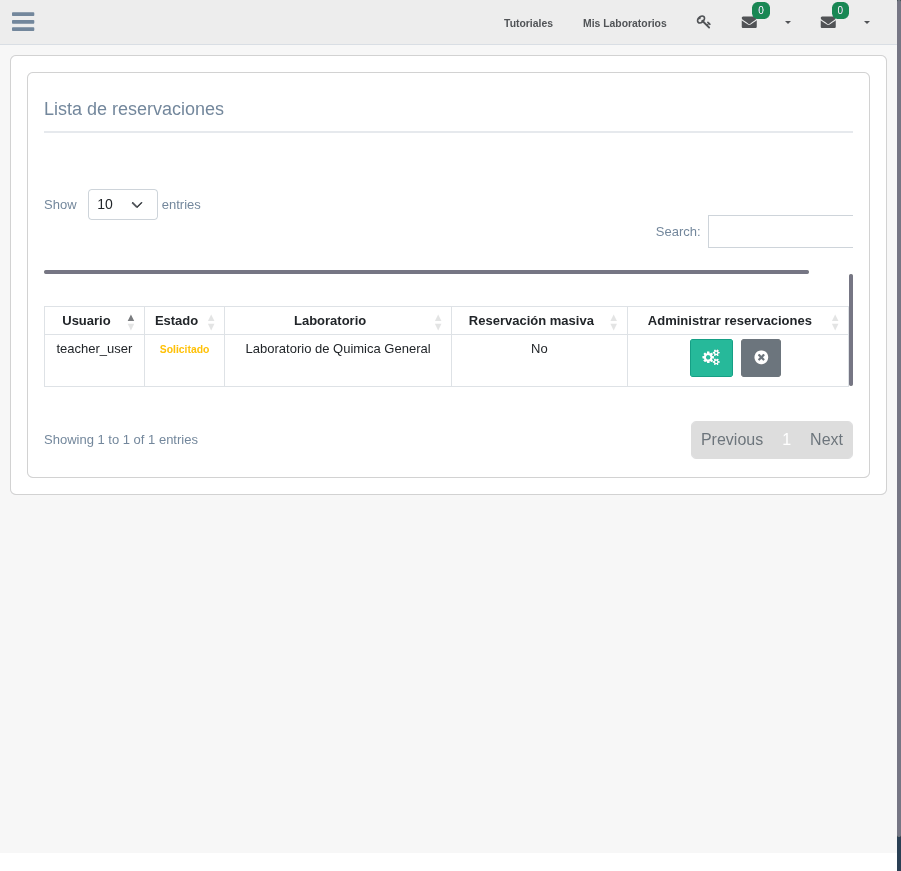
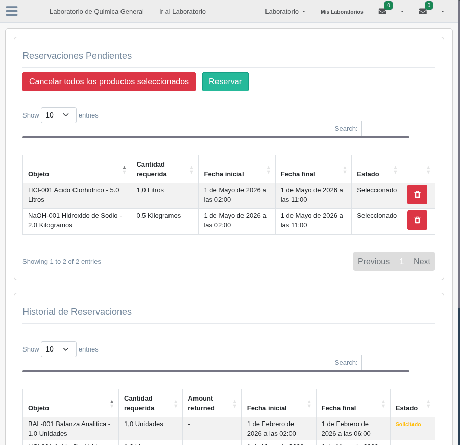

2. Solicitar Reservación
Crear una solicitud de reservación es el primer paso para obtener productos del laboratorio. En esta sección aprenderá cómo seleccionar los productos, definir cantidades y fechas, y enviar la solicitud para su aprobación.
Crear una Solicitud de Reservación
Para solicitar una reservación, el usuario debe acceder al módulo de reservaciones desde el menú principal de su organización. El proceso sigue estos pasos:
- Acceder al módulo de reservaciones: navegue a la sección de reservaciones dentro de su organización. El sistema mostrará la lista de reservaciones existentes y la opción de crear una nueva.
- Iniciar nueva reservación: haga clic en el botón para crear una nueva reservación. Se abrirá el formulario de solicitud donde podrá agregar comentarios sobre el propósito de la reservación.
- Seleccionar productos del inventario: busque y seleccione los objetos que necesita del inventario del laboratorio. Cada producto corresponde a un objeto almacenado en un estante (ShelfObject).
- Definir la cantidad requerida: para cada producto seleccionado, indique la cantidad que necesita en el campo "cantidad requerida". El sistema validará que la cantidad solicitada no exceda la disponible en el estante.
- Establecer las fechas: defina la fecha de inicio y la fecha de fin del préstamo para cada producto. Estas fechas determinan el periodo durante el cual tendrá el producto en su poder.
- Indicar si es retornable: marque si el producto debe ser devuelto al finalizar el préstamo. Los equipos y materiales reutilizables normalmente son retornables; los reactivos consumibles no lo son.
- Enviar la solicitud: una vez configurados todos los productos, envíe la solicitud. El estado de la reservación será "Solicitada" hasta que el encargado la revise.

Formulario de creación de una nueva reservación con los campos de producto, cantidad y fechas
Selección de Productos del Inventario
Al agregar productos a la reservación, el sistema muestra los objetos disponibles en los estantes del laboratorio seleccionado. Para cada producto se presenta:
- El nombre del objeto y su tipo (reactivo, material o equipo)
- La ubicación actual: sala, mueble y estante donde se encuentra
- La cantidad disponible en el estante
- La unidad de medida correspondiente
Es posible agregar múltiples productos a una misma reservación. Cada producto se configura de forma independiente con su propia cantidad, fechas y condición de retorno.

Lista de productos disponibles para selección mostrando cantidad en inventario
Configuración de Fechas
Las fechas de préstamo son fundamentales para el correcto funcionamiento del sistema. Cada producto reservado requiere:
- Fecha de inicio: el momento en que se necesita el producto. En esta fecha, el sistema programará una tarea automática para decrementar el inventario.
- Fecha de fin: el momento en que el producto debe ser devuelto (si es retornable). El sistema utiliza esta fecha para el control de devoluciones.
Reservaciones Masivas
Las reservaciones masivas permiten solicitar productos para un grupo de usuarios a la vez. Esta funcionalidad es especialmente útil en contextos académicos:
- Clases de laboratorio: cuando un grupo de estudiantes necesita los mismos materiales para una práctica.
- Actividades grupales: cuando varios investigadores requieren los mismos recursos para un proyecto conjunto.
Al marcar una reservación como masiva (campo "es masiva"), el sistema permite asociar múltiples usuarios a la misma solicitud, distribuyendo los productos entre los participantes.
Reservaciones desde Procedimientos
Además de crear reservaciones directamente desde el módulo de reservaciones, es posible generar una solicitud a partir de un procedimiento del laboratorio. Cuando un procedimiento define las sustancias y materiales necesarios para su ejecución, el usuario puede iniciar una reservación que incluya automáticamente esos productos.
Para más detalles sobre cómo reservar desde un procedimiento, consulte la sección 5 del Capítulo 4: Reservar desde Procedimiento.